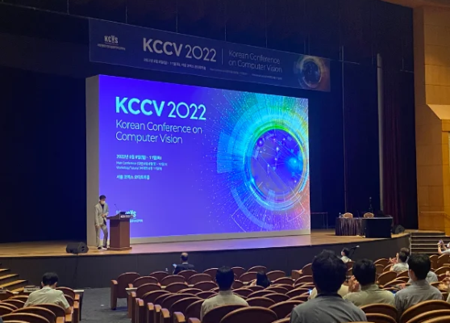
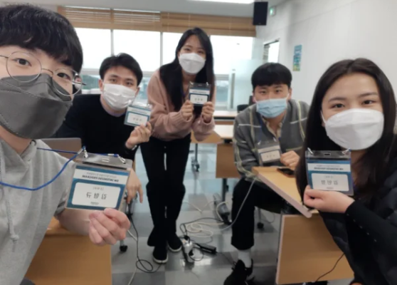
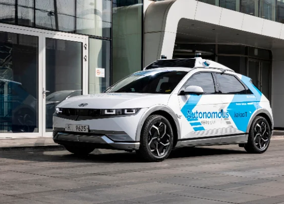
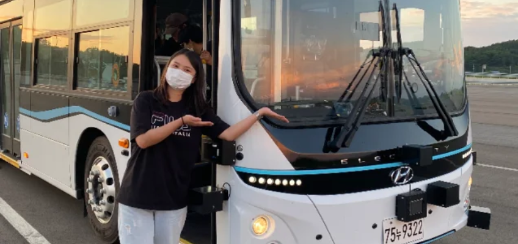
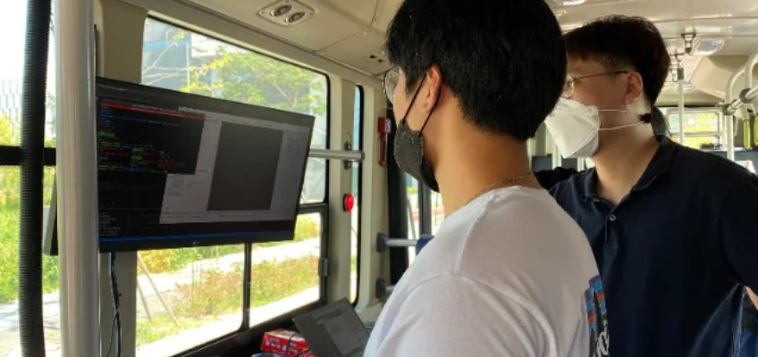
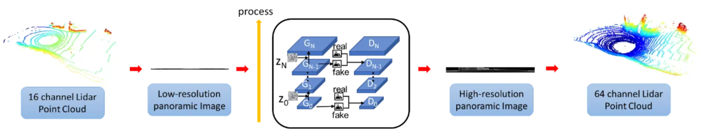

I'm an MSCS student at Georgia Tech working at the intersection of Vision-Language Models (VLMs), 3D perception, and Embodied AI/Robotics. With 4.5 years of industry experience at Hyundai Motor Company, I have led projects spanning large-scale VLM inference pipelines (Qwen3.5 9B/122B, Ray Serve) and advanced 3D LiDAR perception for autonomous systems.
Backed by a solid foundation in Mechanical Engineering and Automotive-Computer Convergence (M.S., GPA 4.0/4.0), my research focuses on combining multimodal foundation models with 3D spatial understanding for visual reasoning and robotic action. I am the inventor on 10 patents and author of 2 publications in perception and domain adaptation.
My goal is to pioneer next-generation VLM/VLA architectures that enable intelligent agents to seamlessly perceive, reason, and act in complex physical environments.
{{ stat.value }}
{{ stat.label }}
Experience



Data Engineer, Automotive Driving SW Development Team
Jan 2022 – PresentHyundai Motor Company · Seoul, South Korea
{{ block.title }}
{{ block.period }}- {{ bullet }}


{{ role.title }}
{{ role.dates }}{{ role.company }} · {{ role.location }}
- {{ bullet }}
Education
{{ edu.school }}
{{ edu.degree }}
{{ edu.meta }}
{{ edu.date }}
Awards & Honors
{{ award }}
+ Add award
+ Add award
Publications & Patents
A research record spanning autonomous perception and vision-language modeling, with contributions recognized both in peer-reviewed venues and as filed intellectual property.
Publications
{{ pub.num }}
{{ pub.citation }}
{{ pub.meta }}

Patents
{{ pat.num }}
{{ pat.citation }}
{{ pat.meta }}
Certifications, Skills & Leadership
{{ group.label }}
{{ tag }}
Certifications
- {{ cert }}
Teaching
- {{ item }}
Leadership
- {{ item }}
Let's talk research.
Open to RA/TA research positions and full-time perception / VLM roles. Reach out directly — I'd love to hear about your lab or team.